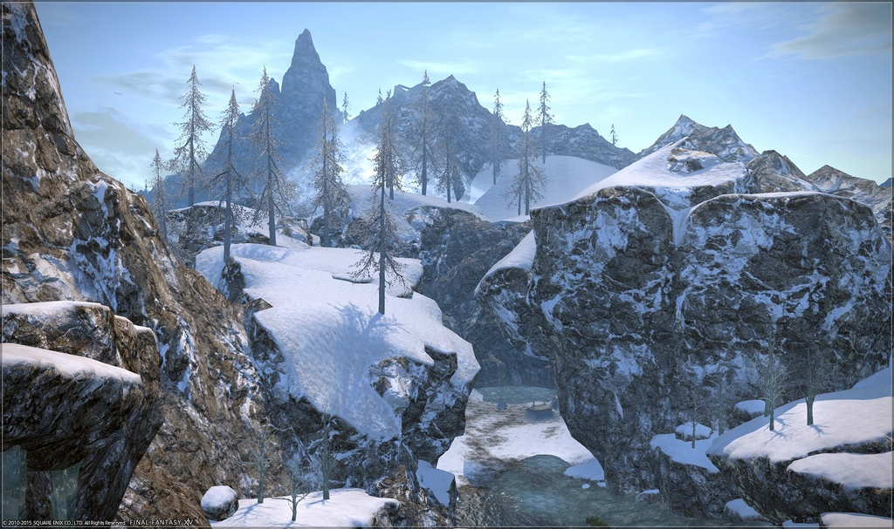

Permite insertar una imagen
Permite incrustar un archivo html dentro de la propia página web
Permite crear un contenedor de contenido externo, que puede ser una página web, imagen, un video, o una aplicación.
Representa un recurso externo, que puede ser tratado como imagen, o recurso manejado por plugin.
Define variables en aplicaciones externas, por ejemplo a object, en el cual se le puede dar parametros como la calidad, o el fondo de la ventana, actualmente la etiqueta está en desuso y por tanto no es recomendable usarla.
Se utiliza para incrustar vídeos en el documento.
Se utiliza para incrustar audio en el documento.
Especifeca recursos de medios múltiples para los elementos picture, audio, o video.
Se utiliza como elemento hijo de los elementos multimedia, audio y video.
Es una etiqueta que sirve para usarla como lienzo, y dibujos sobre ella, o crear imágenes con html.
Crea un mapa de imagen. Los mapas de imagen permiten a los autores definir secciones en una imagen y, opcionalmente, convertirlas en hipervínculos que apuntan a otros recursos.

Es usado para agregar un fragmento de un SVG dentro de un documento SVG o HTML.
Sirve para insertar texto en formato de fórmula matemática.